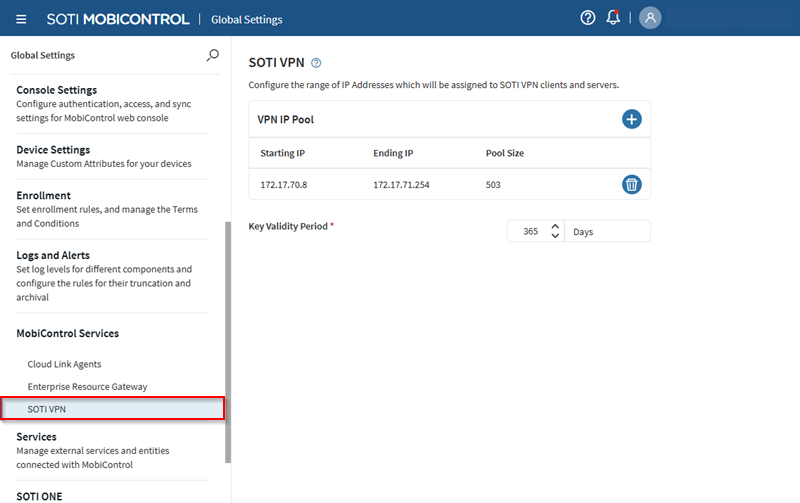

SOTI VPN | Configuring Service Settings
Important: You must have permissions to configure
SOTI VPN service settings. See Manage SOTI VPN .
-
From the SOTI MobiControl main menu, select .

-
In the VPN IP Pool section, define a distinct IP address
pool for your VPN by selecting to add a
Starting IP and an Ending IP.
Defining a range displays a Pool Size that lists the
amount of IP addresses in the specified range.
When a device gets a SOTI VPN profile payload, it receives an IP address from this pool. SOTI VPN servers also receive IP addresses from the same address pool.Tip: In scenarios such as a key renewal or revoking and re-applying SOTI VPN payloads, you must generate a new IP-key pair before removing the older one. Have extra IP addresses available to ease this process.Important: Before deleting an IP pool, make sure that an alternative IP pool is available for devices to receive IP addresses.
-
Set a Key Validity Period value. This determines how
long authentication and encryption keys exchanged between the VPN server and its
client devices remain valid before renewing.
Important: Modifying the key validity period value is not recommended unless required for troubleshooting.Note: A SOTI VPN server receives the key upon enrollment and is valid for the specified duration. When a device's SOTI VPN key passes the validity period, a check-in action is required to keep the SOTI VPN active.